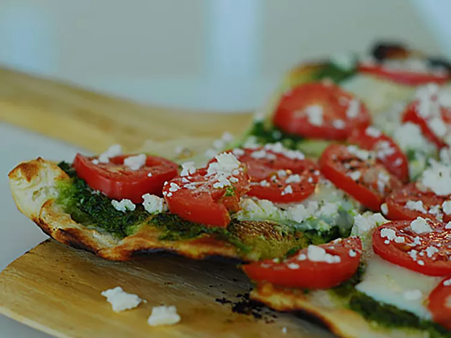

Pesto Pizza

- 1 (12 inch) pre-baked pizza crust
- ½ cup pesto
- 1 ripe tomato, chopped
- ½ cup green bell pepper, chopped
- 1 (2 ounce) can chopped black olives,
drained
- ½ small red onion, chopped
- 1 (4 ounce) can artichoke hearts,
drained and sliced
- 1 cup crumbled feta cheese
Directions
Step 1
Preheat the oven to 450 degrees F (230 degrees C).
Step 2
Spread pesto on pizza crust. Top with tomato, bell pepper, olives, red onion,
artichoke hearts, and feta cheese.
Step 3
Bake in the preheated oven until cheese is melted and browned, 8 to 10
minutes.